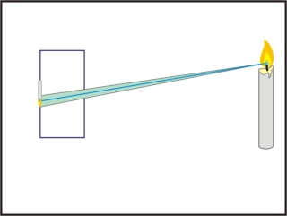
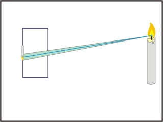

Camera Design
Box size: 12" X 8.5" X 5"
Pinhole size: By calcaulation, 2mm is the best pinhole size. But since ±1mm doesn't make obvious change to the result image, we decided to use 1mm, 3mm and 5mm in order to compare results.
Digital camera: Sony alpha 55


Scene 1 - window view
Digital camera setting: 1600 ISO for 5 sec exposure time.
These photos were shot at 10 am in the morning. The pinhole faced north when we shot so that we have enough indirect sunlight came in the box. The photos are windows of our living room. The pinhole camera results were reflected and rotated in order to match the real view.


Scene 2 - dinner table
Digital camera setting: 3200 ISO for 30 sec exposure time.
These photos were shot at 11am in the morning. There was direct sunlight from the right and it was very sunny outside. The pinhole camera results were reflected and rotated in order to match the real view. The angle of the camera is slightly different from the pinhole camera.


Summary
As we can see in those pictures we took, larger size pinhole makes photos look brighter while blurrier than smaller size pinhole. That is because that when using larger pinhole we are having more light going through our camera, so the rays coming from just one point of the object will cover a larger area compared to smaller pinhole. For smaller pinhole, the area is so tiny that it would look like a point, which explains that why images look sharper using small pinhole.
However, with less light coming in for small pinhole, it would unavoidably makes images dimmer, which explains the darkness in our 1mm pinhole pictures. It can be fixed if we increase exposure time and adjust the ISO parameters, but due to the limitation of our digital camera, taking a good photo in dark area is unlikely to give us a promising result.
 

Four scenes with 3mm pinhole
The best size for our pinhole camera is with 3mm diameter, so we shot all four scenes with 3mm pinhole
Little yard in our home
Digital camera setting: 1600 ISO for 30 sec exposure time.
These photos were shot at 1 pm in the afternoon. We also took photos in the morning where there was brighter light outside, but we also captured the Sun in the photo and create a shiny spot that affected the overall appearance of the resulting photo. Thus, we decided to take the photo in the afternoon. The pinhole camera results were reflected and rotated in order to match the real view.

Sudikoff Lab 005
Digital camera setting: 12800 ISO for 30 sec exposure time.
These photos were shot at night in the Sudikoff Lab 005. There was no sunlight at all in the scene so we used the large ISO in order to increase the sensitivity of the camera to the light. However, as we can see in the result, the noise also increased. The pinhole camera results were reflected and rotated in order to match the real view.

Parking lot view
Digital camera setting: 1600 ISO for 30 sec exposure time.
These photos were shot at 2pm in the parking lot near Life Science Center. It was a cloudy day but we still have good enough light in the scene. The most difficult part of taking this photo is adjusting the position of the pinhole camera. The pinhole camera results were reflected and rotated in order to match the real view.

Outside of our home
Digital camera setting: 400 ISO for 5 sec exposure time.
These photos were shot at 1pm outside of our home. The sun light was coming from right of our photos and it was a good sunny day so that we only need low ISO and few exposure time. The most difficult part of The pinhole camera results were reflected and rotated in order to match the real view.

Bells and Whistles - Camera Obscura in my room!
Set up everything, including cover the window and door gap with aluminum foil and poke a pinhole at the window.

The image that goes through the pinhole will display on this wall.

Digital camera setting: 3200 ISO for 30 sec exposure time.
8am in my room facing west with 3200 iso for 30 sec exposure time.
The final image captured by our camera is as below. The trees outside my window are upside down.

Bells and Whistles - Tracing Paper Screen!
Same room as camera obscura but with a tracing paper as the screen to view the image.

The image we captured. Pretty much the same with camera obscura.

Bells and Whistles - Anaglyph 3D
Same room as camera obscura, but use two pineholes with red and blue filter.

The image we captured. Due to weather, we cannot get a good photo, but if you use a 3D red-cyan glasses, you can see the stereoscopic 3D effect. We rotate the image to match the real view,

Bells and Whistles - Light Painting!
8pm at the dark living room with 30 sec exposure time, drawing with iphone's torch light.
Drawing waves
Repeatedly drawing wave shape when shooting

Drawing stars
Repeatedly drawing a five-pointed start when shooting

Drawing eights
Repeatedly drawing an eight when shooting